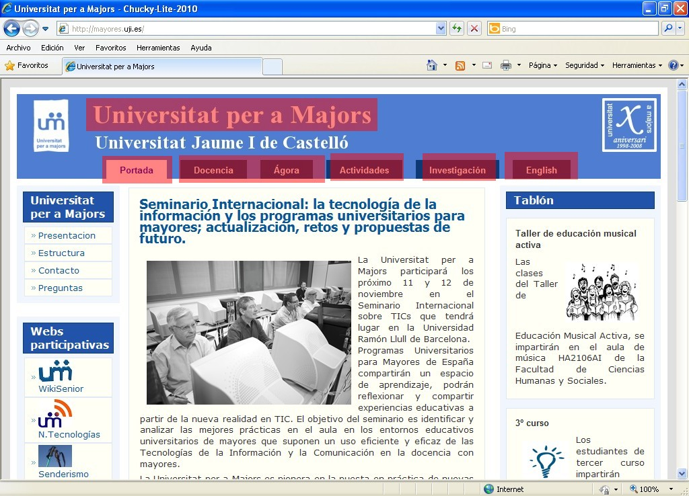
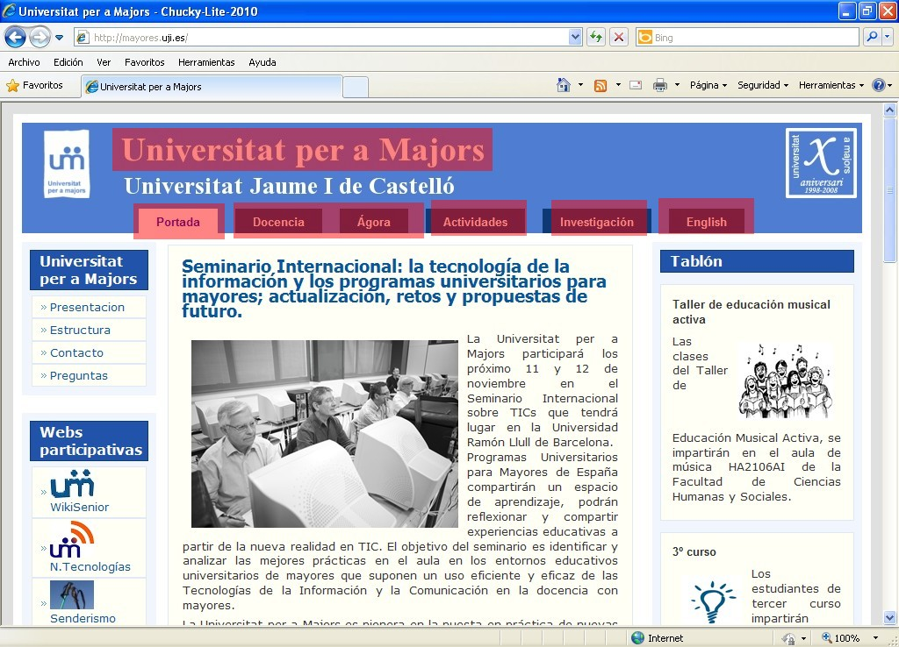

Iniciación a la informática e Internet
Repaso
Internet
Apreta la tecla → para avanzar.


Una página Web, también conocida como una página de Internet, es un documento electrónico que forma parte de un sitio Web.
Su principal característica son los hipervínculos de una página, siendo esto el fundamento de la Web.
 



Cambia de foto con las teclas: ↑ y ↓
Cada web tiene su propia estructura, su información, y se navega según unos hiperenlaces que ha decidido la persona que montó la web.

¿Cómo se navega por la web? Es una técnica en apariencia sencilla que lleva mucha complejidad en su proceso.


Cambia de foto con las teclas: ↑ y ↓
La URL (Uniform Resource Locator) es la manera que tenemos de acceder a los contenidos de la web.
Cambia de foto con las teclas: ↑ y ↓
Hace unos años encontrar contenidos en la web era complicado, ya que necesitábamos conocer uno o varios enlaces de los que partir para encontrar la información que buscábamos. Hoy en día es más fácil gracias a los motores de búsqueda.
Cambia de foto con las teclas: ↑ y ↓